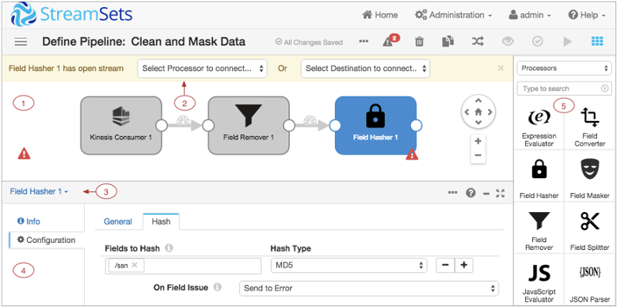

Data Collector UI - Edit Mode
The following image shows the Data Collector UI when you configure a pipeline:

| Area / Icon | Name | Description |
|---|---|---|
| 1 | Pipeline canvas | Displays the pipeline. Use to configure the pipeline data flow. |
| 2 | Pipeline Creation Help Bar | Offers lists of stages to help complete the pipeline. You can use the help bar to connect a stage to an open node. You can also add a stage between linked stages by clicking the link. |
| 3 | Stage list | Lists the stages in the pipeline. Use to select a stage to configure. You can also select the stage in the canvas. |
| 4 | Properties panel | Displays the properties of the pipeline or selected stage when you configure a pipeline. |
| 5 | Stage library | List of available stages. Use to add stages to the pipeline. You can drag a stage to a
location on canvas or click a stage to add it to the end of the pipeline. You can view all stages, stages by type, or stages by library. You can also search for a stage by name. |
| StreamSets Control Hub icon | Provides information about StreamSets Control Hub (SCH) and lets you register this Data Collector with Control Hub. | |
| Home icon | Displays a home page with a list of pipelines and their statuses, allowing you to perform pipeline maintenance and navigate to individual pipelines. | |
| Package Manager icon | Displays the Package Manager which allows you to install additional stage libraries for a core Data Collector installation. | |
| Notifications icon | Displays notifications. | |
| Administration icon | Provides access to Data Collector configuration properties, directories, and log. Also allows you to shut down Data Collector. | |
| User icon | Displays the active user and the roles assigned to the user. Also allows you to log out of Data Collector. | |
| Help icon | Provides context-sensitive help based on the information in the panel. Allows you to
configure display settings and to specify whether to use a local or hosted version of the
help. Provides access to the REST API and the Data Collector version. |
|
| Link to a pipeline list | Link to a pipeline list on the Home page. Use to view a list of available pipelines, perform pipeline maintenance like starting or sharing a pipeline, and navigate to individual pipelines. | |
| More icon | Provides additional actions for the pipeline. Use to reset the origin for the pipeline. Or to view or delete snapshot data. | |
| Issues icon | Displays the number of implicit validation issues in the pipeline. Click to view a detailed list of issues found during implicit validation. | |
| View Log icon | Displays the Data Collector log. The equivalent to selecting Administration > Logs. | |
| Undo icon | Reverts recent changes. On Mac, you can also use Command+Z. On Windows, you can use Ctrl+Z. | |
| Redo icon | Restores changes that were reverted. On Mac, you can also use Command+Shift+Z. On Windows, you can use Ctrl+Y. | |
| Delete icon | Deletes the selected stage or link. | |
| Duplicate Stage icon | Duplicates the selected stage. You can duplicate processors and destinations. Because a pipeline can include only one origin, you cannot duplicate an origin stage. | |
| Auto Arrange icon | Arranges the stages in the pipeline. | |
| Preview icon | Starts a data preview. | |
| Validate icon | Validates the pipeline. Performs explicit validation. | |
| Share icon | Shares the pipeline with users and groups. Use to configure pipeline permissions. | |
| Start icon | Starts the pipeline. | |
| Stage Library icon | Toggles the display of the stage library. | |
| Stream Link icon | Indicates the flow of data through the pipeline. Select to configure data rules and alerts. | |
| Error icon | Indicates that one or more required properties are not defined. Can display on a stage
for stage properties or in the canvas for pipeline properties. Related error messages display when you hover over the icon. You can also view the messages in the Issues list. The icon can also display on tabs in the properties panel to indicate the location of missing properties. |
|
| Maximize Pane icon | Maximizes the configuration panel. |
For example, the Copy icon displays only when you select stage that can be copied, it does not display when you select a link or an origin. Or, if you log in with the Manager role, most configuration-related icons are not available.
For information about general areas and icons, see Data Collector User Interface.
For information about working with pipelines on the Home page, see Data Collector UI - Pipelines on the Home Page.
For information about data preview options, see Data Collector UI - Preview Mode.
For information about pipeline monitoring options, see Data Collector UI - Monitor Mode.